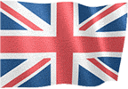
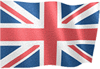
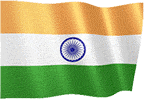
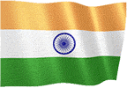

РУКОВОДСТВО ПО ИГРЕ v3
Выберите язык руководства по игре.
 



 


ОБЩИЙ ГЕЙМПЛЕЙ
● Цель игры - завоевать весь мир, совершая наземные операции или используя секретное агентство.
● Вы можете использовать параметры, связанные с экономикой, безопасностью и управлением страной на игровом экране.
● Чтобы перейти на следующий день, вы должны использовать стрелку в правом нижнем углу игрового экрана.
● Ежедневный доход и дневное население добавляются ко всем состояниям в дневных переходах.
● Когда день подходит к концу, другие государства могут делать предложения вашей стране или могут произойти случайные мировые события.
● Решения, которые вы принимаете по предложениям и ситуациям, могут повлиять на вашу экономику, население и отношения с другими правительствами.
ЭКОНОМИКА
● Вы можете зарабатывать деньги, инвестируя в свою страну.
● Вы можете заработать, выбрав налоговую ставку.
● Вы можете заработать на переработке найденных полезных ископаемых.
● Вы можете делать инвестиции, отправляя своих деловых людей в другие страны.
● Вы получаете ежедневный доход от государственных учреждений.
● Заводские и промышленные исследования приносят вам дополнительный доход.
● Вы зарабатываете дополнительные деньги с каждого туриста, который приезжает в вашу страну.
● Вы можете поддержать свою экономику, сняв ссуды.
● Если вы покоряете страны, вы выиграете одноразовый главный приз.
● Вам добавляется 100% ежедневного дохода стран, которые вы занимаетесь.
● (Вы можете проверить это в разделе Статистика - Доходы от завоевания.)
● Вы можете зарабатывать деньги, выполняя операции из раздела «Национальная безопасность».
● Вы можете зарабатывать деньги, совершая кибератаки на другие страны.
● Вы можете заработать деньги, объявив национальную мобилизацию.
● Вы можете зарабатывать деньги, используя свою секретную службу.
ОПЕРАЦИОННЫЙ ЦЕНТР
● Вы можете вторгаться в страны с помощью наземных операций.
● Если вам удастся пройти наземную кампанию, вы заработаете очки захвата.
● Если точка вторжения достигнет 100%, страна будет завоевана.
● Вы можете ослабить армию вражеской страны ударами с воздуха.
● Вы можете совершать кибератаки на другие страны.
● Вы можете использовать дополнительные возможности, активировав здание консульства.
● Вы можете получать военные, экономические и подробные отчеты, размещая шпионов в странах.
● Вы можете заключать соглашения о дружбе со странами, с которыми ведете войну.
● Вы можете проводить все атаки с разрешениями.
● Вы можете применять эмбарго к странам.
ОТЕЧЕСТВЕННОЕ ПРОИЗВОДСТВО
● Вы можете произвести желаемый продукт из производственного отдела.
● Вы должны отправлять странам торговые запросы для продажи вашей продукции.
● Вы можете договориться о ценах на товары, которые хотят покупать другие страны.
● Только дружественные страны хотят покупать у вас товары.
● Чем больше у вас разнообразия продуктов, тем больше у вас шансов торговать.
● Вы можете повысить цены на свои предложения, улучшив торговые отношения с другими странами.
ЛИЧНАЯ БЕЗОПАСНОСТЬ
● Страны, с которыми вы воюете, могут убить вас.
● Вам следует ознакомиться с отчетом советника.
● Чтобы защитить себя от убийств, вам следует назначить надежного защитника.
● Вам также необходимо обновить пакеты поддержки.
СЕКРЕТНАЯ ОРГАНИЗАЦИЯ
● Вы можете начать беспорядки в других странах, создав секретную службу.
● Вы можете совершить покушение с секретной службой.
● Вы можете использовать только обученный персонал для работы.
● Ваш обученный персонал и оружие повысят вашу оперативную мощь.
СОБРАНИЕ и ВЫБОРЫ
● Выборы проводятся каждые 365 дней.
● Вы должны набрать наибольшее количество голосов, чтобы выиграть выборы.
● Если вы добьетесь успеха в сделанном выборе, вы заработаете дополнительные деньги.
● Принимайте законы, митинги, раздайте деньги, собеседования, чтобы выиграть голоса.
● Если вы проиграете выборы, вы должны вмешаться в течение 8 дней.
● Если военное вмешательство не удастся, игра окончена.
(ПРЕМИУМ) ГЛОБАЛЬНЫЕ АЛЬЯНСЫ
● Вы можете создать свой собственный альянс или вступить в существующие альянсы.
● Вы можете проводить встречи с союзными государствами.
● Зарабатывать деньги можно, выполняя запросы союзных государств.
● Исследование альянса активирует дополнительные возможности.
● Вы можете усилить свою защиту, используя продукцию альянса.
● Вы можете проводить совместные операции с союзными государствами.
● Если вы нападаете на государства-члены одного альянса, вас могут исключить из альянса.
(ПРЕМИУМ) ОРГАНИЗАЦИЯ ОБЪЕДИНЕННЫХ НАЦИЙ
● Вы можете проголосовать за 5 различных резолюций в Организации Объединенных Наций.
● Решения о финансовой поддержке или экономических санкциях могут быть приняты для других стран.
● Новые решения не могут быть приняты, пока не закончатся активные решения.
● В решениях голосуют только незавоеванные страны.
(ПРЕМИУМ) ТЯЖЕЛАЯ ПРОМЫШЛЕННОСТЬ
● Тяжелая промышленность может производить 5 различных видов оружия и снаряжения по индивидуальному заказу.
● Только дружественные страны с торговыми запросами могут отправить вам торговый запрос.
● Изготовленное оружие нельзя использовать в боях.
ВЫИГРАТЬ И ПРОИГРАТЬ
● Если вы покорите все страны на 100%, вы выиграете игру.
● Если ваши деньги меньше -20,000,000, игра окончена.
● Если счастье меньше 0, игра окончена.
О
● Вы можете поделиться с нами контентом, который хотите добавить, и своими предложениями.
● Вы можете связаться с нами по почте со страницы, посвященной игре.
● Будем рады, если вы забьете нашу игру.
● хорошие игры.